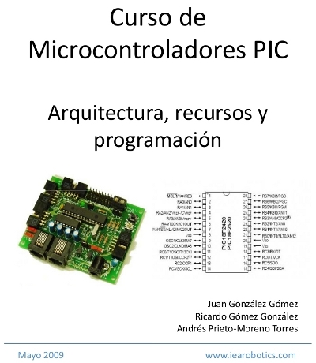
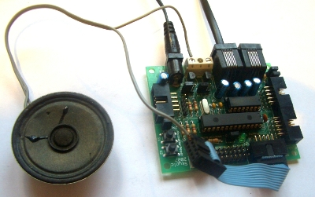
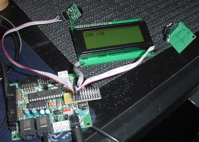

Hemos publicado el “ Curso de programación del PIC 16 en C” que dimos en Junio de 2009 a personal de la Administración Pública. De momento está publicada la información de los PIC 16, aunque en el curso se incluyeron también los de la familia 18.
El enfoque es eminentemente práctico, siguiendo la filosofÃa POE: Programación Orientada a Ejemplos 😉 Todos los ejemplos se han probado en la Tarjeta Skypic.

Se muestran ejemplos del manejo de los puertos digitales, temporizadores, puerto serie, conversor analógico digital, manejo de LCDs, servos, bus I2C, memorias EEPROM y Flash del PIC y control de servos. Uno de los ejemplos es un órgano digital con el PIC, usando el teclado del PC para seleccionar las notas, mediante conexión por puerto serie.
La parte del Bus I2C es especialmente interesante. Se muestran ejemplos de cómo implementar Maestros y Esclavos en la Skypic y cómo acceder a varios sensores mediante este bus: El emisor/receptor de ultrasonidos SRF02, una brújula electrónica y un LCD (ver foto).

El último módulo (el 11) está dedicado a la memoria flash y el protocolo ICSP. No se hicieorn transparencias, pero sí algunos ejemplos muy interesantes y frikis. Uno de ellos, es un programa virus que se clona a sí mismo por el ICSP. Se conecta la Skypic a otra y el programa se transfiere desde la original a la destino. La nueva Skypic puede a su vez “infectar” a otras. Sobre este tema ya hablaré más adelante, cuando tenga hechos los vídeos 😉